Automate your sales operations: Delivery, Invoice, and Payment — all in one click!
This module automates multiple backend operations in the sales flow. On confirming a Sales Order, it can auto-validate delivery, generate invoices, and optionally register payments, based on your settings.
To enable and configure the automation:
Under Sales > Configuration > Settings enable "Auto Validate Deliver" and Choose option from "Auto Sale Invoice".
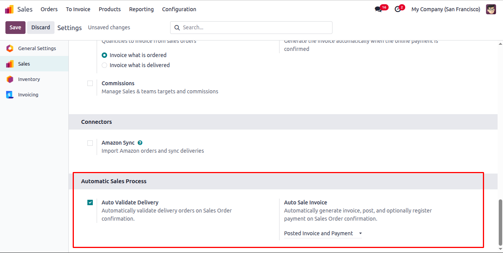Create a Sale Quotation and confirm it from the Sales Order.
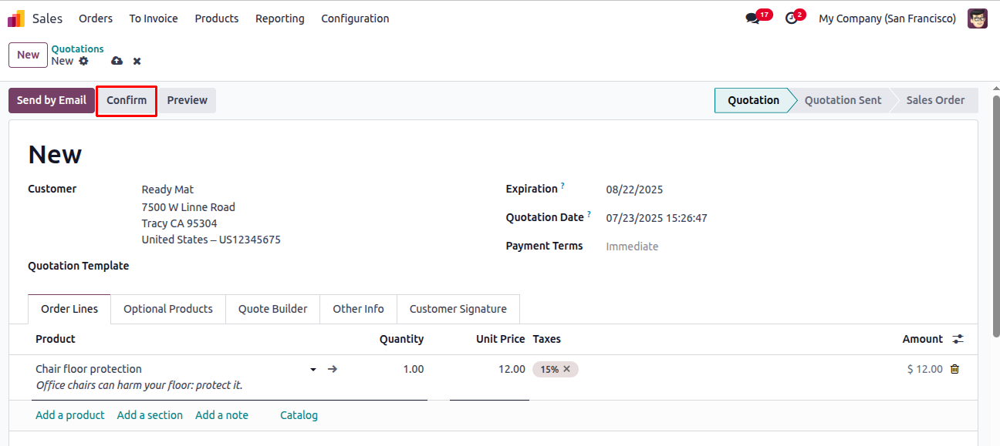After confirming the Sale Order, the system automatically validates the delivery.
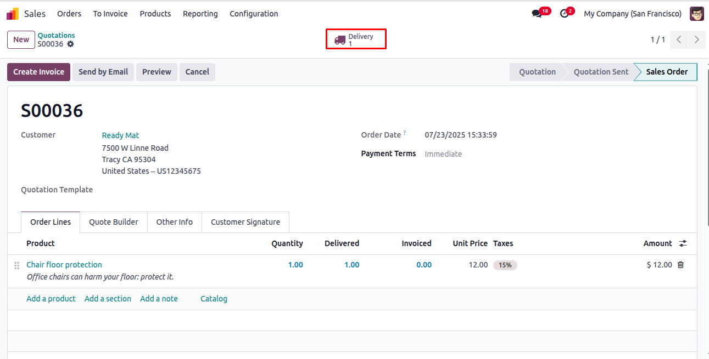 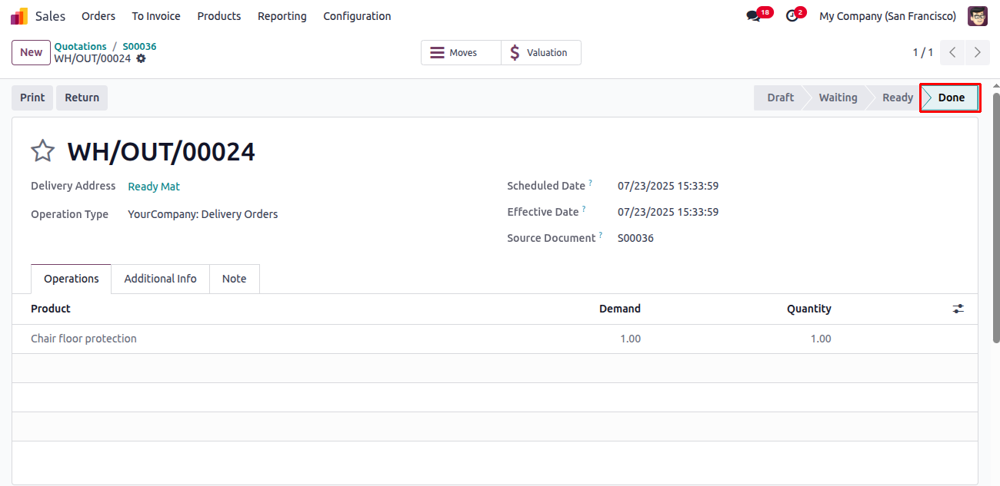If you choose create invoice from Auto Sale Invoice, the system will create an invoice automatically but will not confirm it.
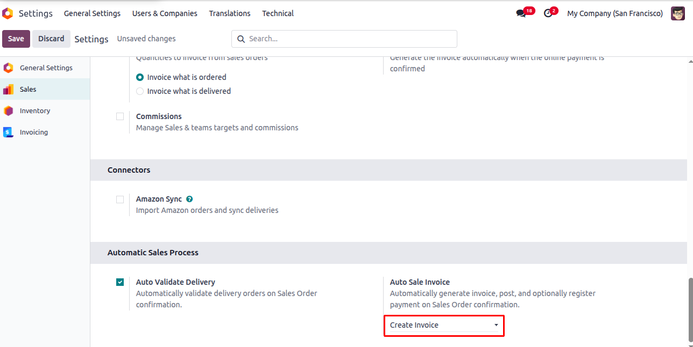 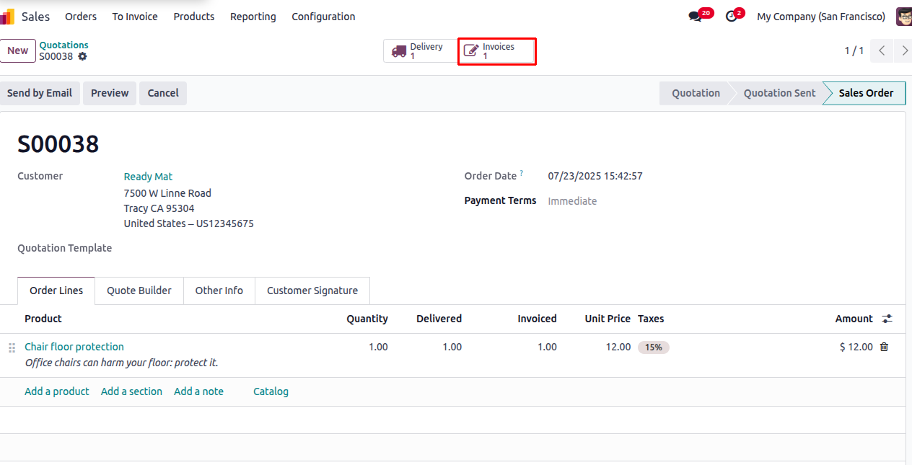 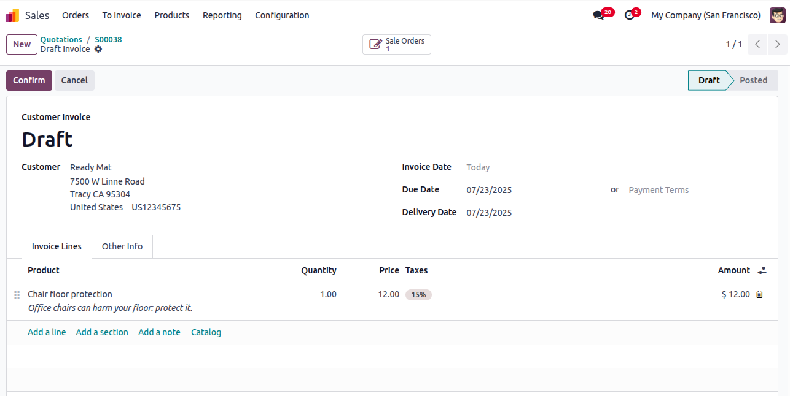If you choose Invoice and Post, the system will create and confirm the invoice automatically.
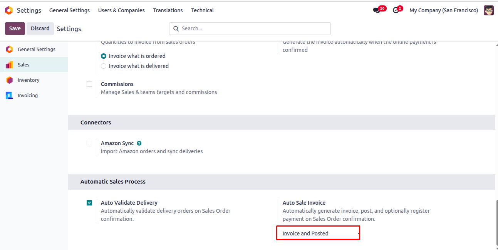 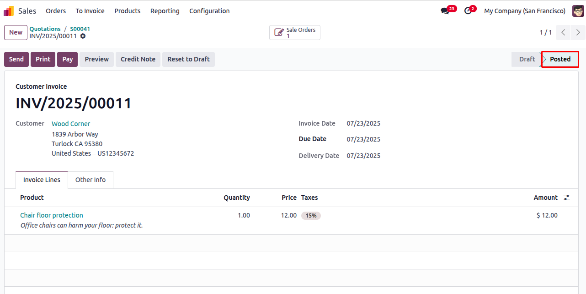If you choose Post and Register Payment, the system will create, confirm the invoice and register the payment automatically.
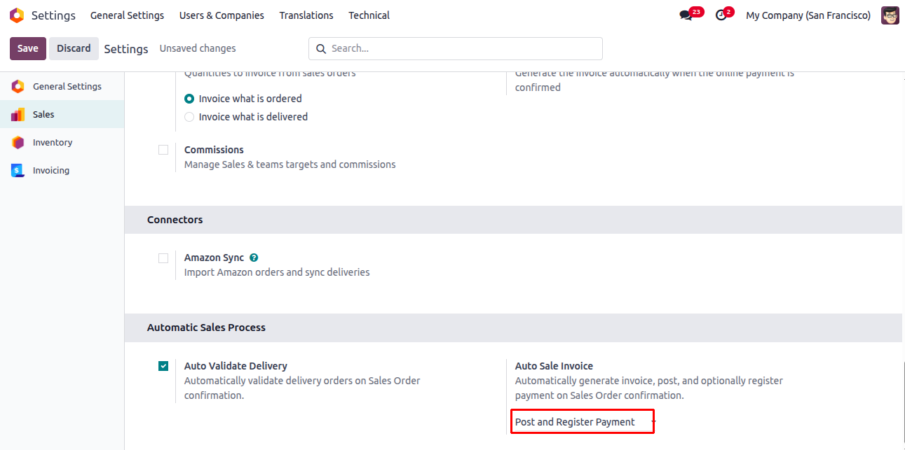 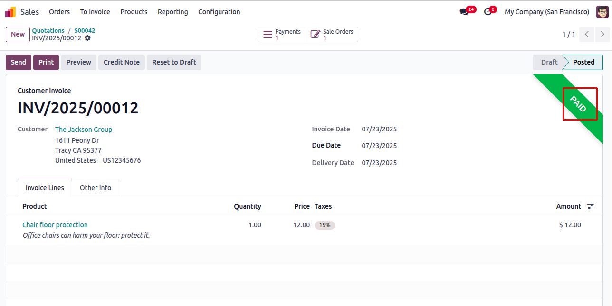© 2025 Cenote Soft. All rights reserved.